<title>KROMA Portfólio Institucional</title>
<meta name="claude:viewport-fit-sides" content="cover">
<link rel="preconnect" href="https://fonts.googleapis.com">
<link rel="preconnect" href="https://fonts.gstatic.com" crossorigin>
<link rel="stylesheet" href="https://fonts.googleapis.com/css2?family=Bricolage+Grotesque:opsz,wght@12..96,600;12..96,700;12..96,800&family=Instrument+Serif:ital@0;1&family=Space+Grotesk:wght@400;500;600&family=JetBrains+Mono:wght@400;500&display=swap">
<style>
/* Layout: identidade KROMA (tela escura, cromia RGB). Proposta comercial em capítulos:
   quem somos → prova → por que → narrativa → setor público → privado → método → entregáveis → medição → contato. */
:root{
  color-scheme: dark;
  --bg:#060607;
  --bg-2:#0d0d12;
  --bg-3:#15151c;
  --fg:#f4f1ea;
  --fg-dim:#bdbab2;
  --muted:#8a877f;
  --line:rgba(255,255,255,.10);
  --line-2:rgba(255,255,255,.18);
  --c-cyan:#3ae7ff;
  --c-vio:#8b5cff;
  --c-mag:#ff3d86;
  --wa:#25d366;
  --grad:linear-gradient(100deg,var(--c-cyan),var(--c-vio) 52%,var(--c-mag));
  --font-d:"Bricolage Grotesque", system-ui, sans-serif;
  --font-b:"Space Grotesk", system-ui, sans-serif;
  --font-s:"Instrument Serif", Georgia, serif;
  --font-m:"JetBrains Mono", ui-monospace, monospace;
  --maxw:1180px;
  --r:14px;
}
*{box-sizing:border-box}
html{scroll-behavior:smooth}
@media (prefers-reduced-motion: reduce){html{scroll-behavior:auto}*{animation:none!important;transition:none!important}}
body{background:var(--bg);color:var(--fg);font-family:var(--font-b);font-size:17px;line-height:1.6;-webkit-font-smoothing:antialiased}
body::before{content:"";position:fixed;inset:0 0 auto;height:env(safe-area-inset-top,0px);z-index:10;background:var(--bg)}
a{color:inherit}
a:focus-visible,button:focus-visible{outline:2px solid var(--c-cyan);outline-offset:3px;border-radius:4px}
img{display:block;max-width:100%;height:auto}
.wrap{max-width:var(--maxw);margin:0 auto;padding-left:max(16px, env(safe-area-inset-left,0px));padding-right:max(16px, env(safe-area-inset-right,0px))}
@media (min-width:720px){.wrap{padding-left:max(40px, env(safe-area-inset-left,0px));padding-right:max(40px, env(safe-area-inset-right,0px))}}
section{border-top:1px solid var(--line)}
section > .wrap{padding-block:clamp(56px,9vw,112px)}
h1,h2,h3{font-family:var(--font-d);font-weight:700;line-height:1.04;letter-spacing:-.02em;text-wrap:balance;margin:0}
h2{font-size:clamp(34px,5.2vw,62px)}
h3{font-size:21px;letter-spacing:-.01em;line-height:1.18}
p{margin:0}
em.s{font-family:var(--font-s);font-style:italic;font-weight:400;letter-spacing:0}
.grad{background:var(--grad);-webkit-background-clip:text;background-clip:text;color:transparent}
.eyebrow{font-family:var(--font-m);font-size:12px;letter-spacing:.14em;text-transform:uppercase;color:var(--muted);display:flex;gap:12px;align-items:center;flex-wrap:wrap}
.eyebrow b{color:var(--c-cyan);font-weight:500}
.lead{font-size:clamp(17px,1.55vw,20px);color:var(--fg-dim);max-width:62ch}
.head{display:grid;gap:18px;margin-bottom:clamp(36px,5vw,56px)}
.num{font-variant-numeric:tabular-nums}
.note{margin-top:18px;color:var(--muted);font-size:14px;max-width:80ch}

/* botões */
.btn{display:inline-flex;align-items:center;gap:10px;font-family:var(--font-b);font-weight:600;font-size:15px;text-decoration:none;padding:12px 20px;border-radius:999px;border:1px solid var(--line-2);color:var(--fg);background:transparent;cursor:pointer;transition:transform .2s, border-color .2s}
.btn:hover{transform:translateY(-1px);border-color:var(--fg-dim)}
.btn.wa{background:var(--wa);border-color:var(--wa);color:#05210f}
.btn svg{width:18px;height:18px;flex:none}

/* barra */
.bar{position:sticky;top:env(safe-area-inset-top,0px);z-index:5;background:rgba(6,6,7,.88);backdrop-filter:blur(10px);border-bottom:1px solid var(--line)}
.bar .wrap{display:flex;align-items:center;justify-content:space-between;gap:16px;padding-block:12px}
.logo{font-family:var(--font-d);font-weight:800;font-size:20px;letter-spacing:.02em;text-decoration:none}
.logo span{background:var(--grad);-webkit-background-clip:text;background-clip:text;color:transparent}
.nav{display:flex;gap:20px;font-size:14px;color:var(--fg-dim)}
.nav a{text-decoration:none}
.nav a:hover{color:var(--fg)}
.bar .btn{padding:8px 14px;font-size:14px}
@media (max-width:980px){.nav{display:none}}

/* hero */
.hero{position:relative;overflow:hidden;border-top:0}
.hero::before{content:"";position:absolute;inset:-30% -10% auto 40%;height:120%;background:radial-gradient(closest-side,rgba(139,92,255,.22),transparent 70%);pointer-events:none}
.hero .wrap{position:relative;display:grid;grid-template-columns:1.15fr .85fr;gap:clamp(32px,5vw,64px);align-items:center;padding-block:clamp(48px,8vw,104px)}
.hero .wrap > *{min-width:0}
.hero .intro{display:grid;gap:26px;align-content:center}
.hero h1{font-size:clamp(46px,7.4vw,98px);font-weight:800;letter-spacing:-.035em;line-height:.96}
.hero .ctas{display:flex;gap:12px;flex-wrap:wrap}
.hero .meta{display:grid;grid-template-columns:repeat(3,1fr);gap:16px;border-top:1px solid var(--line);padding-top:20px}
.hero .meta div{display:grid;gap:2px;font-size:14.5px;line-height:1.35}
.hero .meta small{font-family:var(--font-m);font-size:10.5px;letter-spacing:.14em;text-transform:uppercase;color:var(--muted)}
@media (max-width:560px){.hero .meta{grid-template-columns:1fr}}
.phones{position:relative;height:clamp(420px,46vw,560px)}
.phone{position:absolute;width:52%;aspect-ratio:9/16;max-width:100%;border-radius:22px;overflow:hidden;border:6px solid #1c1c24;box-shadow:0 30px 60px -20px rgba(0,0,0,.8)}
.phone img{width:100%;height:100%;object-fit:cover}
.phone figcaption{position:absolute;inset:auto 0 0;padding:28px 12px 12px;background:linear-gradient(transparent,rgba(0,0,0,.85));font-size:12.5px;line-height:1.25;font-weight:600;color:#f4f1ea}
.phone figcaption span{display:block;font-family:var(--font-m);font-size:10px;font-weight:400;color:#bdbab2;margin-top:2px}
.phone.p1{left:0;top:9%;transform:rotate(-6deg)}
.phone.p2{left:24%;top:0;z-index:2}
.phone.p3{right:0;top:12%;transform:rotate(6deg)}
@media (max-width:900px){.hero .wrap{grid-template-columns:1fr}.phones{height:clamp(360px,100vw,480px);max-width:520px;width:100%;margin:0 auto}}

/* stats */
.stats{display:grid;grid-template-columns:repeat(4,1fr);gap:1px;background:var(--line);border:1px solid var(--line);border-radius:var(--r);overflow:hidden}
.stat{background:var(--bg-2);padding:28px 24px;display:grid;gap:10px;align-content:start}
.stat .n{font-family:var(--font-d);font-weight:800;font-size:clamp(44px,5.4vw,66px);line-height:1;letter-spacing:-.03em;font-variant-numeric:tabular-nums}
.stat .l{font-weight:600;line-height:1.3}
.stat .d{color:var(--muted);font-size:14px;line-height:1.45}
@media (max-width:900px){.stats{grid-template-columns:repeat(2,1fr)}}
@media (max-width:420px){.stats{grid-template-columns:1fr}}

.split{display:grid;grid-template-columns:1fr 1fr;gap:clamp(24px,3.5vw,48px);margin-top:clamp(36px,5vw,56px);align-items:start}
.split > *{min-width:0}
@media (max-width:900px){.split{grid-template-columns:1fr}}
.panel{border:1px solid var(--line);border-radius:var(--r);padding:28px;background:var(--bg-2)}
.panel .sub{color:var(--muted);font-size:14px;margin:6px 0 22px}

.bars{display:grid;gap:12px}
.brow{display:grid;grid-template-columns:116px 1fr 32px;gap:12px;align-items:center;font-size:15px}
.brow .track{height:14px;background:var(--bg-3);border-radius:3px;overflow:hidden}
.brow .fill{height:100%;background:var(--fg-dim);border-radius:3px}
.brow.pub .fill{background:var(--grad)}
.brow.pub span:first-child{font-weight:600}
.brow .v{text-align:right;font-family:var(--font-m);font-size:14px;font-variant-numeric:tabular-nums}
.axis{display:grid;grid-template-columns:116px 1fr 32px;gap:12px;margin-top:4px}
.axis .ticks{display:flex;justify-content:space-between;font-family:var(--font-m);font-size:11px;color:var(--muted)}
@media (max-width:420px){.brow,.axis{grid-template-columns:92px 1fr 28px;font-size:14px}}

.results{display:grid;gap:14px}
.res{display:grid;grid-template-columns:62px 118px 1fr;gap:16px;align-items:center}
.res img{width:62px;aspect-ratio:9/16;object-fit:cover;border-radius:8px;border:1px solid var(--line-2)}
.res .big{font-family:var(--font-d);font-weight:800;font-size:38px;line-height:1;letter-spacing:-.03em;font-variant-numeric:tabular-nums;min-width:3.4ch}
.res .big small{font-size:15px;font-weight:600;color:var(--fg-dim);letter-spacing:0;margin-left:2px}
.res p{color:var(--fg-dim);font-size:14.5px;line-height:1.45}
.res p b{color:var(--fg);font-weight:600;display:block}
@media (max-width:460px){.res{grid-template-columns:52px 1fr}.res img{width:52px;grid-row:span 2}.res .big{font-size:32px}}
.res{text-decoration:none;border-radius:10px;transition:background .2s}
a.res:hover{background:var(--bg-3)}
.res .badge{font-family:var(--font-m);font-size:11px;letter-spacing:.14em;text-transform:uppercase;font-weight:500;padding:6px 10px;border-radius:999px;background:var(--grad);color:#060607;white-space:nowrap;justify-self:start;align-self:center;min-width:9.5ch;text-align:center}
.res .eng{display:block;margin-top:4px;font-family:var(--font-m);font-size:11.5px;color:var(--muted)}
.private{margin-top:20px;padding-top:18px;border-top:1px solid var(--line);display:grid;gap:10px}
.private > span{font-family:var(--font-m);font-size:11px;letter-spacing:.14em;text-transform:uppercase;color:var(--muted)}
.private ul{list-style:none;margin:0;padding:0;display:flex;flex-wrap:wrap;gap:8px 22px;font-size:14px;color:var(--fg-dim)}
.private b{font-family:var(--font-d);font-size:18px;color:var(--fg);margin-right:4px}
.src{margin-top:18px;font-family:var(--font-m);font-size:11.5px;color:var(--muted)}

/* grid de objetivos/princípios com ícone */
.goals{display:grid;grid-template-columns:repeat(3,1fr);gap:1px;background:var(--line);border:1px solid var(--line);border-radius:var(--r);overflow:hidden}
.goal{background:var(--bg);padding:28px 26px;display:grid;gap:12px;align-content:start}
.goal .ico{width:44px;height:44px;border-radius:12px;display:grid;place-items:center;background:var(--bg-3);border:1px solid var(--line-2)}
.goal .ico svg{width:22px;height:22px;stroke:var(--c-cyan);fill:none;stroke-width:1.7;stroke-linecap:round;stroke-linejoin:round}
.goal .k{font-family:var(--font-m);font-size:11px;letter-spacing:.14em;text-transform:uppercase;color:var(--muted)}
.goal p{color:var(--fg-dim);font-size:15.5px}
.goal.main{background:var(--bg-2)}
.goal.main .ico{background:var(--grad);border:0}
.goal.main .ico svg{stroke:#060607}
@media (max-width:960px){.goals{grid-template-columns:repeat(2,1fr)}}
@media (max-width:620px){.goals{grid-template-columns:1fr}}

.law{margin-top:28px;display:grid;grid-template-columns:auto 1fr;gap:20px;align-items:start;padding:24px 26px;border:1px solid var(--line-2);border-radius:var(--r)}
.law .tag{font-family:var(--font-m);font-size:12px;padding:6px 10px;border:1px solid var(--line-2);border-radius:999px;white-space:nowrap}
.law p{color:var(--fg-dim);font-size:15.5px;max-width:78ch}
.law q{font-family:var(--font-s);font-style:italic;font-size:19px;color:var(--fg);quotes:"“" "”"}
@media (max-width:560px){.law{grid-template-columns:1fr}}

/* narrativa */
.cycle{display:grid;grid-template-columns:1fr 1fr;gap:clamp(24px,4vw,56px);align-items:center;margin-bottom:clamp(40px,6vw,72px)}
.cycle > *{min-width:0}
.cycle svg{width:100%;max-width:560px;height:auto;margin:0 auto}
.cycle .arc{fill:none;stroke:var(--line-2);stroke-width:2}
.cycle .ring{fill:none;stroke:url(#g);stroke-width:1;opacity:.35}
.cycle .node{fill:var(--bg)}
.cycle .nodeR{fill:none;stroke:url(#g);stroke-width:3}
.cycle .nn{fill:var(--fg);font:600 15px var(--font-m)}
.cycle .lb{fill:var(--fg);font:700 19px var(--font-d)}
.cycle .ls{fill:var(--muted);font:400 14px var(--font-b)}
.cycle .ctr{fill:var(--fg);font:800 40px var(--font-d);letter-spacing:-.02em}
.cycle .ctrs{fill:var(--fg-dim);font:italic 22px var(--font-s)}
.cycle .ah{fill:var(--fg-dim)}
@media (max-width:900px){.cycle{grid-template-columns:1fr}}
.cycle ol{list-style:none;padding:0;margin:0;display:grid;gap:16px;counter-reset:c}
.cycle li{display:grid;grid-template-columns:34px 1fr;gap:14px;counter-increment:c}
.cycle li::before{content:counter(c);width:34px;height:34px;border-radius:50%;display:grid;place-items:center;border:1px solid var(--line-2);font-family:var(--font-m);font-size:13px;color:var(--c-cyan)}
.cycle li b{display:block;font-family:var(--font-d);font-size:18px}
.cycle li span{color:var(--fg-dim);font-size:15px}

.compare{display:grid;grid-template-columns:1fr 1fr;gap:18px;margin-top:clamp(36px,5vw,56px)}
.compare > *{min-width:0}
@media (max-width:820px){.compare{grid-template-columns:1fr}}
.cmp{border:1px solid var(--line);border-radius:var(--r);overflow:hidden;background:var(--bg-2);display:grid;grid-template-rows:auto 1fr}
.cmp .top{padding:12px 20px;font-family:var(--font-m);font-size:11px;letter-spacing:.14em;text-transform:uppercase;color:var(--muted);border-bottom:1px solid var(--line)}
.cmp .body{padding:24px;display:grid;gap:14px;align-content:start}
.cmp.old .doc{background:#e9e6df;color:#2a2a2a;border-radius:6px;padding:18px 20px;font-family:Georgia,serif;font-size:15px;line-height:1.5}
.cmp.old .doc small{display:block;font-family:var(--font-m);font-size:10px;letter-spacing:.12em;text-transform:uppercase;color:#77746d;margin-bottom:8px}
.cmp.old .doc b{display:block;font-size:18px;margin-bottom:6px}
.cmp.new{border-color:var(--line-2)}
.cmp.new .top{color:var(--fg)}
.cmp.new .body{grid-template-columns:120px 1fr;align-items:center}
.cmp.new img{width:120px;aspect-ratio:9/16;object-fit:cover;border-radius:12px;border:1px solid var(--line-2)}
.cmp .verdict{font-size:14.5px;color:var(--fg-dim)}
.cmp .verdict b{color:var(--fg)}
@media (max-width:420px){.cmp.new .body{grid-template-columns:90px 1fr}.cmp.new img{width:90px}}

/* galeria pública */
.gallery{display:grid;grid-template-columns:repeat(4,1fr);gap:14px}
@media (max-width:1000px){.gallery{grid-template-columns:repeat(3,1fr)}}
@media (max-width:520px){.gallery{grid-template-columns:repeat(2,1fr)}}
.reel{position:relative;display:block;aspect-ratio:9/16;max-width:100%;border-radius:12px;overflow:hidden;text-decoration:none;border:1px solid var(--line);background:var(--bg-3)}
.reel img{width:100%;height:100%;object-fit:cover;transition:transform .5s}
.reel:hover img{transform:scale(1.04)}
.reel .cap{position:absolute;inset:auto 0 0;padding:40px 12px 12px;background:linear-gradient(transparent,rgba(0,0,0,.88));color:#f4f1ea}
.reel .cap b{display:block;font-family:var(--font-d);font-size:15px;line-height:1.15}
.reel .cap span{display:block;font-family:var(--font-m);font-size:10px;letter-spacing:.06em;color:#bdbab2;margin-top:4px;text-transform:uppercase}
.reel .play{position:absolute;top:10px;right:10px;width:30px;height:30px;border-radius:50%;background:rgba(0,0,0,.55);display:grid;place-items:center}
.reel .play svg{width:12px;height:12px;fill:#f4f1ea}
.tags{display:flex;flex-wrap:wrap;gap:8px;margin-top:22px}
.tags span{font-family:var(--font-m);font-size:12px;padding:6px 12px;border:1px solid var(--line-2);border-radius:999px;color:var(--fg-dim)}

/* cases de campanha */
.cases{display:grid;grid-template-columns:1fr 1.25fr;gap:18px;margin-bottom:clamp(40px,6vw,64px)}
.cases > *{min-width:0}
@media (max-width:900px){.cases{grid-template-columns:1fr}}
.case{border:1px solid var(--line-2);border-radius:var(--r);background:var(--bg-2);padding:22px;display:grid;grid-template-columns:auto 1fr;gap:22px;align-items:start}
.case .thumbs{display:flex;gap:10px}
.case .reel{width:130px}
.case .info{display:grid;gap:12px;min-width:0}
.case .info p{color:var(--fg-dim);font-size:15px}
.case dl{display:grid;grid-template-columns:auto 1fr;gap:6px 12px;margin:4px 0 0;font-size:14px}
.case dt{font-family:var(--font-m);font-size:11px;letter-spacing:.12em;text-transform:uppercase;color:var(--muted);padding-top:2px}
.case dd{margin:0;color:var(--fg)}
.chip{justify-self:start;font-family:var(--font-m);font-size:11px;letter-spacing:.1em;text-transform:uppercase;padding:5px 10px;border-radius:999px;border:1px solid var(--line-2);color:var(--c-cyan)}
.case .reel .cap{padding:24px 10px 10px}
.reel.illu{display:grid;place-items:center;background:radial-gradient(120% 80% at 50% 0%,rgba(255,61,134,.22),transparent 60%),var(--bg-3)}
.reel.illu svg.art{width:64%;height:auto}
@media (max-width:560px){.case{grid-template-columns:1fr}.case .reel{width:calc(50% - 5px);max-width:150px}}

/* venda: prova, dor, urgência, objeções */
.micro{font-size:13.5px;color:var(--muted);margin-top:-12px}
.micro b{color:var(--fg-dim);font-weight:500}
.proof{display:grid;gap:10px;padding:16px 18px;border:1px solid var(--line);border-radius:var(--r);background:rgba(255,255,255,.02)}
.proof small{font-family:var(--font-m);font-size:10.5px;letter-spacing:.14em;text-transform:uppercase;color:var(--muted)}
.proof ul{list-style:none;margin:0;padding:0;display:flex;flex-wrap:wrap;gap:6px 18px;font-size:14.5px}
.proof li{display:flex;align-items:center;gap:8px}
.proof li::before{content:"";width:6px;height:6px;border-radius:50%;background:var(--grad)}
.pain{display:grid;grid-template-columns:repeat(3,1fr);gap:14px;margin-bottom:clamp(32px,4vw,48px)}
@media (max-width:820px){.pain{grid-template-columns:1fr}}
.pain div{padding:22px 24px;border-radius:var(--r);border:1px solid var(--line);background:var(--bg-2);display:grid;gap:8px}
.pain .from{font-family:var(--font-m);font-size:12px;color:var(--c-mag);letter-spacing:.06em;text-transform:uppercase}
.pain h3{font-size:19px}
.pain p{color:var(--fg-dim);font-size:15px}
.band{margin-top:clamp(36px,5vw,56px);display:flex;flex-wrap:wrap;gap:16px 24px;align-items:center;justify-content:space-between;padding:24px 28px;border-radius:var(--r);border:1px solid var(--line-2);background:linear-gradient(100deg,rgba(58,231,255,.08),rgba(139,92,255,.08) 52%,rgba(255,61,134,.08))}
.band p{font-family:var(--font-d);font-weight:700;font-size:clamp(19px,2.2vw,24px);line-height:1.2;max-width:34ch;text-wrap:balance}
.band p span{display:block;font-family:var(--font-b);font-weight:400;font-size:15px;color:var(--fg-dim);margin-top:6px}
.cal{display:grid;grid-template-columns:repeat(3,1fr);gap:14px}
@media (max-width:820px){.cal{grid-template-columns:1fr}}
.cal div{padding:22px 24px;border-radius:var(--r);border:1px solid var(--line);display:grid;gap:10px;align-content:start}
.cal .m{font-family:var(--font-d);font-weight:800;font-size:30px;letter-spacing:-.02em}
.cal ul{margin:0;padding-left:18px;color:var(--fg-dim);font-size:15px;display:grid;gap:4px}
.scarce{margin-top:22px;display:grid;grid-template-columns:auto 1fr;gap:16px;align-items:center;padding:20px 24px;border-radius:var(--r);border:1px dashed var(--line-2)}
.scarce svg{width:26px;height:26px;stroke:var(--c-cyan);fill:none;stroke-width:1.7;stroke-linecap:round;stroke-linejoin:round}
.scarce p{color:var(--fg-dim);font-size:15.5px}
.scarce b{color:var(--fg)}
.faq{display:grid;gap:10px;max-width:880px}
.faq details{border:1px solid var(--line);border-radius:var(--r);background:var(--bg-2)}
.faq summary{cursor:pointer;list-style:none;padding:18px 22px;font-family:var(--font-d);font-weight:700;font-size:18px;display:flex;justify-content:space-between;gap:16px;align-items:center}
.faq summary::-webkit-details-marker{display:none}
.faq summary::after{content:"+";font-family:var(--font-m);font-weight:400;font-size:20px;color:var(--c-cyan);flex:none}
.faq details[open] summary::after{content:"–"}
.faq details p{padding:0 22px 20px;color:var(--fg-dim);font-size:15.5px;max-width:70ch}
.next{display:grid;grid-template-columns:repeat(3,1fr);gap:14px;counter-reset:n}
@media (max-width:820px){.next{grid-template-columns:1fr}}
.next li{list-style:none;counter-increment:n;display:grid;grid-template-columns:34px 1fr;gap:12px;align-items:start;font-size:15px;color:var(--fg-dim)}
.next li::before{content:counter(n);width:34px;height:34px;border-radius:50%;display:grid;place-items:center;background:var(--grad);color:#060607;font-family:var(--font-m);font-weight:500;font-size:13px}
.next li b{display:block;color:var(--fg);font-family:var(--font-d);font-size:17px}
.next{margin:0;padding:0}

/* privado */
.mosaic{display:grid;grid-template-columns:repeat(6,1fr);gap:10px}
@media (max-width:1000px){.mosaic{grid-template-columns:repeat(4,1fr)}}
@media (max-width:520px){.mosaic{grid-template-columns:repeat(3,1fr)}}
.mosaic .reel .cap{padding:30px 10px 10px}
.mosaic .reel .cap b{font-size:13px}
.quotes{display:grid;grid-template-columns:repeat(3,1fr);gap:18px;margin-top:28px}
@media (max-width:820px){.quotes{grid-template-columns:1fr}}
.qt{padding:22px 24px;border:1px solid var(--line);border-radius:var(--r);display:grid;gap:8px;align-content:start}
.qt .big{font-family:var(--font-d);font-weight:800;font-size:34px;line-height:1}
.qt p{color:var(--fg-dim);font-size:14.5px}

/* método */
.steps{list-style:none;margin:0;padding:0;display:grid;grid-template-columns:repeat(5,1fr);gap:18px;position:relative}
.steps li{display:grid;gap:12px;align-content:start;position:relative}
.steps .ico{width:52px;height:52px;border-radius:50%;display:grid;place-items:center;background:var(--bg-2);border:1px solid var(--line-2);position:relative;z-index:1}
.steps .ico svg{width:22px;height:22px;stroke:var(--fg);fill:none;stroke-width:1.7;stroke-linecap:round;stroke-linejoin:round}
.steps li:not(:last-child)::after{content:"";position:absolute;top:26px;left:60px;right:-10px;height:1px;background:linear-gradient(90deg,var(--line-2),transparent)}
.steps small{font-family:var(--font-m);font-size:11px;color:var(--c-cyan);letter-spacing:.1em}
.steps p{color:var(--fg-dim);font-size:15px}
@media (max-width:960px){.steps{grid-template-columns:repeat(2,1fr);row-gap:32px}.steps li::after{display:none}}
@media (max-width:520px){.steps{grid-template-columns:1fr}}

.tablewrap{overflow-x:auto;border:1px solid var(--line);border-radius:var(--r);margin-top:22px}
table{width:100%;border-collapse:collapse;min-width:640px;font-size:15px}
th,td{text-align:left;padding:15px 20px;border-bottom:1px solid var(--line);vertical-align:top}
th{font-family:var(--font-m);font-size:11px;letter-spacing:.14em;text-transform:uppercase;color:var(--muted);font-weight:500;background:var(--bg-2)}
tr:last-child td{border-bottom:0}
td:first-child{font-family:var(--font-d);font-weight:700;font-size:17px;white-space:nowrap;color:var(--fg)}
td{color:var(--fg-dim)}

/* entregáveis */
.deliver{display:grid;grid-template-columns:repeat(4,1fr);gap:14px}
@media (max-width:960px){.deliver{grid-template-columns:repeat(2,1fr)}}
@media (max-width:480px){.deliver{grid-template-columns:1fr}}
.dv{padding:22px;border:1px solid var(--line);border-radius:var(--r);background:var(--bg-2);display:grid;gap:10px;align-content:start}
.dv svg{width:26px;height:26px;stroke:var(--c-cyan);fill:none;stroke-width:1.6;stroke-linecap:round;stroke-linejoin:round}
.dv h3{font-size:18px}
.dv p{color:var(--fg-dim);font-size:14.5px}

/* kpis */
.kpis{display:grid;grid-template-columns:repeat(2,1fr);gap:18px}
@media (max-width:760px){.kpis{grid-template-columns:1fr}}
.kpi{display:grid;grid-template-columns:auto 1fr auto;gap:6px 16px;padding:22px 24px;border:1px solid var(--line);border-radius:var(--r);align-items:start}
.kpi svg{width:24px;height:24px;stroke:var(--c-mag);fill:none;stroke-width:1.7;stroke-linecap:round;stroke-linejoin:round;grid-row:span 2;margin-top:2px}
.kpi h3{font-size:19px}
.kpi .f{font-family:var(--font-m);font-size:12px;color:var(--muted);white-space:nowrap;padding-top:4px}
.kpi p{grid-column:2/-1;color:var(--fg-dim);font-size:15px}

/* contato */
.cta{background:radial-gradient(80% 120% at 100% 0%,rgba(58,231,255,.10),transparent 60%),var(--bg)}
.cta .wrap{display:grid;gap:28px}
.cta h2{font-size:clamp(40px,6.6vw,88px);font-weight:800}
.contacts{display:grid;grid-template-columns:1.3fr 1fr 1fr;gap:18px}
@media (max-width:860px){.contacts{grid-template-columns:1fr}}
.contact{padding:24px;border:1px solid var(--line-2);border-radius:var(--r);display:grid;gap:10px;align-content:start;background:var(--bg-2)}
.contact.main{border-color:var(--wa)}
.contact small{font-family:var(--font-m);font-size:11px;letter-spacing:.14em;text-transform:uppercase;color:var(--muted)}
.contact .v{font-family:var(--font-d);font-weight:700;font-size:24px;user-select:all;word-break:break-word}
.contact .row{display:flex;gap:10px;flex-wrap:wrap}
.copy{font-family:var(--font-m);font-size:13px;background:transparent;color:var(--fg-dim);border:1px solid var(--line-2);border-radius:999px;padding:7px 13px;cursor:pointer;text-decoration:none}
.copy:hover{color:var(--fg);border-color:var(--fg-dim)}
footer .wrap{padding-block:28px;display:flex;justify-content:space-between;gap:16px;flex-wrap:wrap;font-family:var(--font-m);font-size:12px;color:var(--muted);border-top:1px solid var(--line)}
</style>

<!-- ícones reutilizados -->
<svg width="0" height="0" style="position:absolute" aria-hidden="true">
  <symbol id="i-wa" viewBox="0 0 24 24"><path fill="currentColor" stroke="none" d="M12 2a10 10 0 0 0-8.6 15.1L2 22l5-1.3A10 10 0 1 0 12 2Zm0 18.2a8.2 8.2 0 0 1-4.2-1.2l-.3-.2-3 .8.8-2.9-.2-.3A8.2 8.2 0 1 1 12 20.2Zm4.5-6.1c-.2-.1-1.5-.7-1.7-.8-.2-.1-.4-.1-.6.1l-.8 1c-.1.2-.3.2-.5.1a6.7 6.7 0 0 1-3.3-2.9c-.3-.4.3-.4.7-1.3.1-.2 0-.3 0-.4l-.8-1.8c-.2-.5-.4-.4-.6-.4h-.5a1 1 0 0 0-.7.3 3 3 0 0 0-.9 2.2 5.2 5.2 0 0 0 1.1 2.7 11.9 11.9 0 0 0 4.6 4c1.7.7 2.3.8 3.2.7.5-.1 1.5-.6 1.7-1.2.2-.6.2-1.1.2-1.2-.1-.1-.2-.2-.5-.3Z"/></symbol>
  <symbol id="i-play" viewBox="0 0 12 12"><path d="M2 1l9 5-9 5z"/></symbol>
</svg>

<header class="bar">
  <div class="wrap">
    <a class="logo" href="#topo">KR<span>O</span>MA</a>
    <nav class="nav" aria-label="Seções">
      <a href="#numeros">Números</a>
      <a href="#porque">Objetivos</a>
      <a href="#narrativa">Narrativa</a>
      <a href="#publico">Setor público</a>
      <a href="#privado">Clientes</a>
      <a href="#metodo">Método</a>
      <a href="#entregas">Entregas</a>
      <a href="#agora">Por que agora</a>
    </nav>
    <a class="btn wa" href="https://wa.me/5588988895040" target="_blank" rel="noopener"><svg><use href="#i-wa"/></svg>Falar com a KROMA</a>
  </div>
</header>

<main id="topo">

<section class="hero">
  <div class="wrap">
    <div class="intro">
      <div class="eyebrow"><b>Portfólio institucional</b> · Proposta para a Prefeitura Municipal · 2026</div>
      <h1>A gestão e o povo, na <em class="s grad">mesma história</em>.</h1>
      <p class="lead">A KROMA é uma assessoria audiovisual do Ceará especializada em comunicação que cria conexão entre a gestão pública e a população. Contamos a história de quem é transformado por cada obra, serviço e campanha. Quando o cidadão se reconhece no que vê, ele assiste, compartilha e confia.</p>
      <div class="ctas">
        <a class="btn wa" href="https://wa.me/5588988895040" target="_blank" rel="noopener"><svg><use href="#i-wa"/></svg>Agendar diagnóstico gratuito</a>
        <a class="btn" href="#publico">Ver trabalhos no setor público</a>
      </div>
      <p class="micro"><b>Gratuito e sem compromisso.</b> Resposta rápida pelo WhatsApp.</p>
      <div class="proof">
        <small>Quem já trabalha com a KROMA</small>
        <ul>
          <li>Prefeitura de Varjota</li>
          <li>Secretaria de Esporte e Juventude</li>
          <li>Julho em Varjota</li>
          <li>11 empresas privadas</li>
        </ul>
      </div>
      <div class="meta">
        <div><small>Base</small>Fortaleza · CE</div>
        <div><small>Atuação</small>Fortaleza, Varjota, Granja e Santa Quitéria</div>
        <div><small>Formatos</small>Reels, institucional e cobertura de eventos</div>
      </div>
    </div>
    <div class="phones" aria-label="Exemplos de reels produzidos pela KROMA">
      <figure class="phone p1" style="margin:0">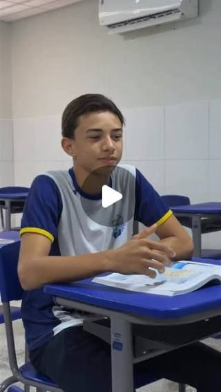<figcaption>Nova Escola, Nova Cara<span>Prefeitura de Varjota</span></figcaption></figure>
      <figure class="phone p2" style="margin:0">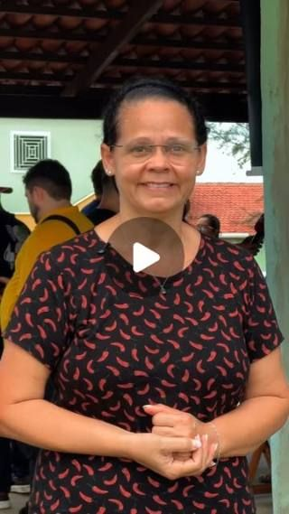<figcaption>Água que Transforma<span>Prefeitura de Varjota</span></figcaption></figure>
      <figure class="phone p3" style="margin:0">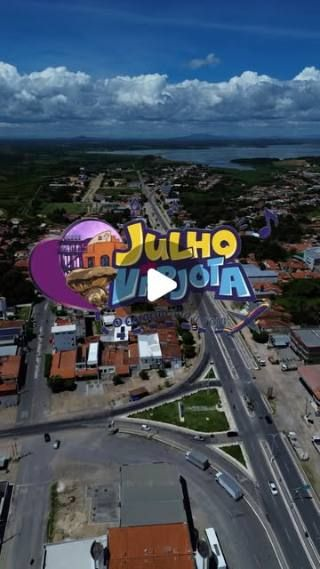<figcaption>O Mês dos Reencontros<span>Julho em Varjota</span></figcaption></figure>
    </div>
  </div>
</section>

<section id="numeros">
  <div class="wrap">
    <div class="head">
      <div class="eyebrow"><b>01</b> · Resultados comprovados</div>
      <h2>Trabalho real, <em class="s">no ar</em>.</h2>
      <p class="lead">Os números vêm do nosso portfólio público em kroma.mov. Todos os vídeos citados estão publicados e podem ser assistidos pelos links desta página.</p>
    </div>

    <div class="stats">
      <div class="stat"><span class="n num grad">57</span><span class="l">reels publicados</span><span class="d">Produções no ar, de marcas privadas a comunicação pública.</span></div>
      <div class="stat"><span class="n num">18</span><span class="l">peças de setor público</span><span class="d">O segmento com mais entregas no nosso portfólio.</span></div>
      <div class="stat"><span class="n num">100%</span><span class="l">clientes recorrentes</span><span class="d">8 clientes fixos hoje. Quem começa com a KROMA, continua.</span></div>
      <div class="stat"><span class="n num">7</span><span class="l">segmentos atendidos</span><span class="d">Em 4 cidades do Ceará, da capital ao interior.</span></div>
    </div>

    <div class="split">
      <div class="panel">
        <h3>Reels entregues por segmento</h3>
        <p class="sub">57 vídeos no portfólio. O setor público lidera.</p>
        <div class="bars" role="img" aria-label="Setor público 18, Serviços 13, Alimentação 7, Educação 6, Automotivo 5, Saúde 4, Varejo 4">
          <div class="brow pub"><span>Setor público</span><div class="track"><div class="fill" style="width:90%"></div></div><span class="v">18</span></div>
          <div class="brow"><span>Serviços</span><div class="track"><div class="fill" style="width:65%"></div></div><span class="v">13</span></div>
          <div class="brow"><span>Alimentação</span><div class="track"><div class="fill" style="width:35%"></div></div><span class="v">7</span></div>
          <div class="brow"><span>Educação</span><div class="track"><div class="fill" style="width:30%"></div></div><span class="v">6</span></div>
          <div class="brow"><span>Automotivo</span><div class="track"><div class="fill" style="width:25%"></div></div><span class="v">5</span></div>
          <div class="brow"><span>Saúde</span><div class="track"><div class="fill" style="width:20%"></div></div><span class="v">4</span></div>
          <div class="brow"><span>Varejo</span><div class="track"><div class="fill" style="width:20%"></div></div><span class="v">4</span></div>
        </div>
        <div class="axis" aria-hidden="true"><span></span><div class="ticks"><span>0</span><span>5</span><span>10</span><span>15</span><span>20</span></div><span></span></div>
      </div>

      <div class="panel">
        <h3>Cada vídeo tem um propósito</h3>
        <p class="sub">Nem todo vídeo nasce para viralizar. Uns informam, outros educam, outros mobilizam. A narrativa é construída a partir do objetivo e do contexto de cada pauta.</p>
        <div class="results">
          <a class="res" href="https://www.instagram.com/reel/DQjvppLkcNM" target="_blank" rel="noopener">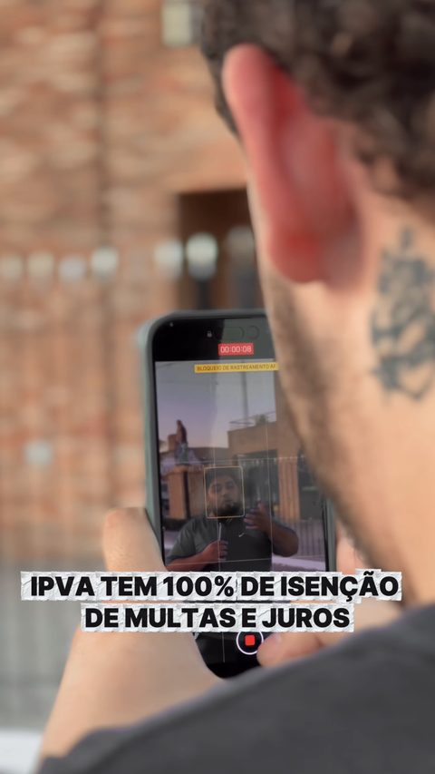<span class="badge">Informar</span><p><b>IPVA sem multas e juros</b>Serviço direto ao cidadão: o benefício explicado de forma simples, para quem precisa regularizar o veículo.</p></a>
          <a class="res" href="https://www.instagram.com/reel/DQo5UAdEbeX" target="_blank" rel="noopener">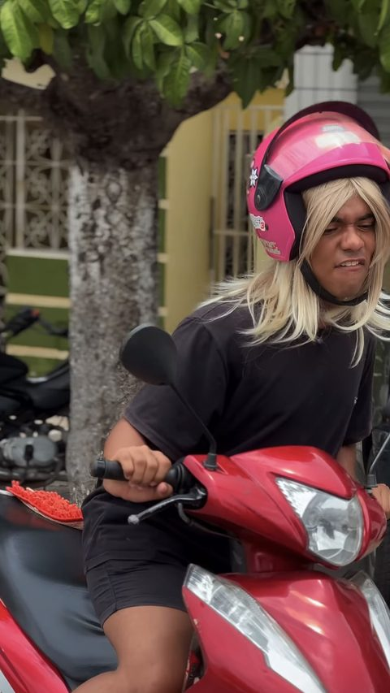<span class="badge">Educar</span><p><b>Capacete é lei</b>Humor e personagem local para falar de regra de trânsito sem sermão. Quem ri, assiste até o fim.</p></a>
          <a class="res" href="https://www.instagram.com/reel/DXOxjq3giEo" target="_blank" rel="noopener">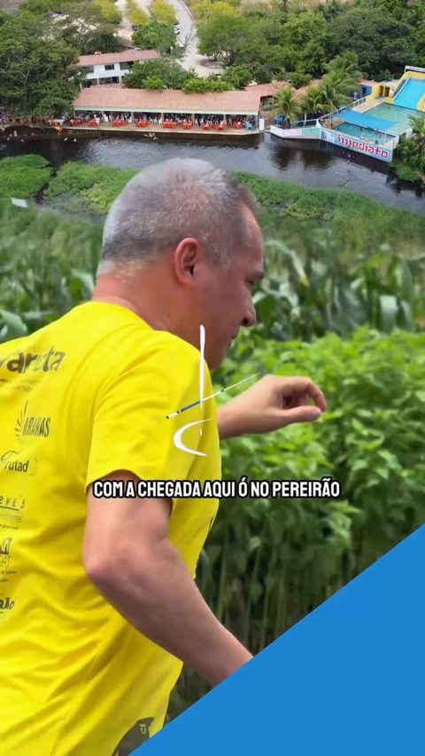<span class="badge">Mobilizar</span><p><b>Corrida do Trabalhador Varjotense</b>Convite com energia para levar a população às inscrições e à programação esportiva.</p></a>
          <a class="res" href="https://www.instagram.com/reel/DVT15p8kfYi" target="_blank" rel="noopener"><span class="badge">Valorizar</span><p><b>Nova Escola, Nova Cara</b>A obra apresentada pelos próprios alunos. Prestação de contas que vira orgulho da comunidade.</p></a>
        </div>
        <div class="private">
          <span>Alcance na iniciativa privada</span>
          <ul>
            <li><b class="num">19 mil</b> Dr. Júnior Mororó</li>
            <li><b class="num">15 mil</b> Frango do Zé</li>
            <li><b class="num">9 mil</b> Natural Roots</li>
          </ul>
        </div>
        <p class="src">Reels publicados em @prefeituradevarjota e @sejuv_varjota · alcance privado: kroma.mov, consultado em 18/11/2026</p>
      </div>
    </div>
  </div>
</section>

<section id="porque">
  <div class="wrap">
    <div class="head">
      <div class="eyebrow"><b>02</b> · Objetivos</div>
      <h2>Por que trabalhar <em class="s grad">dessa forma</em>.</h2>
      <p class="lead">A prefeitura já entrega muita coisa boa: obra concluída, posto reformado, campanha de vacinação. O desafio é fazer isso chegar ao coração de quem foi beneficiado. Uma informação a pessoa esquece. Uma história em que ela se reconhece cria vínculo.</p>
    </div>

    <div class="pain">
      <div><span class="from">Sem comunicação</span><h3>A obra é entregue, mas ninguém vê</h3><p>O investimento acontece, mas a população não sabe o que mudou nem quem fez. O trabalho da gestão passa sem reconhecimento.</p></div>
      <div><span class="from">Sem comunicação</span><h3>O serviço existe, mas ninguém conhece</h3><p>Programa, benefício ou atendimento que o cidadão não conhece vira dúvida no balcão, ligação na secretaria e oportunidade perdida.</p></div>
      <div><span class="from">Sem comunicação</span><h3>O evento acontece com a praça vazia</h3><p>Festa, campanha ou competição sem chamada certa não mobiliza. O esforço da organização não vira participação.</p></div>
    </div>

    <div class="goals">
      <div class="goal main"><span class="ico"><svg viewBox="0 0 24 24"><circle cx="8" cy="8" r="3"/><circle cx="16" cy="8" r="3"/><path d="M2 20c0-3.3 2.7-6 6-6 1.5 0 2.9.6 4 1.5A6 6 0 0 1 22 20"/></svg></span><span class="k">Conexão</span><h3>Aproximar a gestão de quem ela atende</h3><p>O objetivo central de todo o trabalho. Gente real, lugares da cidade e o jeito de falar do povo fazem a população sentir a prefeitura por perto.</p></div>
      <div class="goal"><span class="ico"><svg viewBox="0 0 24 24"><path d="M3 21h18M5 21V10l7-5 7 5v11M9 21v-6h6v6"/></svg></span><span class="k">Transparência</span><h3>Prestação de contas que o cidadão entende</h3><p>Uma obra explicada em 40 segundos, com antes e depois, comunica mais que um ofício publicado. O cidadão vê para onde foi o recurso.</p></div>
      <div class="goal"><span class="ico"><svg viewBox="0 0 24 24"><circle cx="12" cy="12" r="9"/><path d="M12 7v5l3 2"/></svg></span><span class="k">Serviço público</span><h3>Informação útil na hora certa</h3><p>Matrícula, horário da UBS, dia de vacinação, mudança no trânsito. Vídeo curto e direto ajuda a reduzir fila e dúvida no atendimento.</p></div>
      <div class="goal"><span class="ico"><svg viewBox="0 0 24 24"><rect x="4" y="4" width="16" height="17" rx="2"/><path d="M8 2v4M16 2v4M4 10h16M8 14h4"/></svg></span><span class="k">Planejamento</span><h3>Estratégia antes da câmera</h3><p>Pauta mensal construída com as secretarias. Cada vídeo tem objetivo, público e mensagem definidos antes da gravação.</p></div>
      <div class="goal"><span class="ico"><svg viewBox="0 0 24 24"><path d="M3 11l15-6v14L3 13v-2Z"/><path d="M7 13v5h3"/></svg></span><span class="k">Mobilização</span><h3>Campanhas que geram adesão</h3><p>Eventos, festas tradicionais e campanhas de saúde precisam de gente participando. O vídeo certo antes do evento é o que leva gente à praça.</p></div>
      <div class="goal"><span class="ico"><svg viewBox="0 0 24 24"><path d="M4 20V10M10 20V4M16 20v-7M22 20H2"/></svg></span><span class="k">Mensuração</span><h3>Resultado medido todo mês</h3><p>Relatório mensal com alcance, retenção e resposta da população por secretaria. A gestão sabe o que tocou as pessoas.</p></div>
    </div>

    <div class="law">
      <span class="tag">CF/88 · art. 37, § 1º</span>
      <p><q>A publicidade dos atos, programas, obras, serviços e campanhas dos órgãos públicos deverá ter caráter educativo, informativo ou de orientação social…</q><br><br>Todo o conteúdo institucional que produzimos segue esse princípio: o cidadão e o serviço no centro, sem promoção pessoal de autoridades. Isso dá segurança jurídica à comunicação da gestão.</p>
    </div>
  </div>
</section>

<section id="narrativa">
  <div class="wrap">
    <div class="head">
      <div class="eyebrow"><b>03</b> · Narrativa</div>
      <h2>Como a gente <em class="s grad">constrói a história</em>.</h2>
      <p class="lead">A comunicação que conecta funciona como um ciclo. A gestão realiza, a história é contada, o cidadão se reconhece e responde, e o que ele diz volta como pauta.</p>
    </div>

    <div class="cycle">
      <svg viewBox="-80 20 760 520" role="img" aria-label="Ciclo da conexão: gestão realiza, KROMA conta a história, cidadão se reconhece, engaja e compartilha, a escuta vira pauta">
        <defs>
          <linearGradient id="g" x1="0" x2="1" y1="0" y2="1"><stop offset="0" stop-color="#3ae7ff"/><stop offset=".52" stop-color="#8b5cff"/><stop offset="1" stop-color="#ff3d86"/></linearGradient>
          <marker id="ah" viewBox="0 0 10 10" refX="8" refY="5" markerWidth="7" markerHeight="7" orient="auto-start-reverse"><path class="ah" d="M0 0 10 5 0 10z"/></marker>
        </defs>
        <circle class="ring" cx="300" cy="290" r="120"/>
        <text class="ctr" x="300" y="292" text-anchor="middle">Conexão</text>
        <text class="ctrs" x="300" y="324" text-anchor="middle">gestão ↔ população</text>
        <path d="M338.2 93.7 A200 200 0 0 1 474.9 193.0" class="arc" marker-end="url(#ah)"/>
        <path d="M498.5 265.6 A200 200 0 0 1 446.3 426.4" class="arc" marker-end="url(#ah)"/>
        <path d="M384.5 471.3 A200 200 0 0 1 215.5 471.3" class="arc" marker-end="url(#ah)"/>
        <path d="M153.7 426.4 A200 200 0 0 1 101.5 265.6" class="arc" marker-end="url(#ah)"/>
        <path d="M125.1 193.0 A200 200 0 0 1 261.8 93.7" class="arc" marker-end="url(#ah)"/>
        <g><circle class="node" cx="300" cy="90" r="22"/><circle class="nodeR" cx="300" cy="90" r="22"/><text class="nn" x="300" y="95" text-anchor="middle">1</text>
          <text class="lb" x="300" y="44" text-anchor="middle">Gestão realiza</text><text class="ls" x="300" y="62" text-anchor="middle">obra, serviço, campanha</text></g>
        <g><circle class="node" cx="490.2" cy="228.2" r="22"/><circle class="nodeR" cx="490.2" cy="228.2" r="22"/><text class="nn" x="490.2" y="233.2" text-anchor="middle">2</text>
          <text class="lb" x="524" y="224" text-anchor="start">KROMA conta</text><text class="ls" x="524" y="244" text-anchor="start">a história de quem viveu</text></g>
        <g><circle class="node" cx="417.6" cy="451.8" r="22"/><circle class="nodeR" cx="417.6" cy="451.8" r="22"/><text class="nn" x="417.6" y="456.8" text-anchor="middle">3</text>
          <text class="lb" x="430" y="504" text-anchor="middle">Cidadão</text><text class="ls" x="430" y="523" text-anchor="middle">se reconhece</text></g>
        <g><circle class="node" cx="182.4" cy="451.8" r="22"/><circle class="nodeR" cx="182.4" cy="451.8" r="22"/><text class="nn" x="182.4" y="456.8" text-anchor="middle">4</text>
          <text class="lb" x="170" y="504" text-anchor="middle">Engaja</text><text class="ls" x="170" y="523" text-anchor="middle">e compartilha</text></g>
        <g><circle class="node" cx="109.8" cy="228.2" r="22"/><circle class="nodeR" cx="109.8" cy="228.2" r="22"/><text class="nn" x="109.8" y="233.2" text-anchor="middle">5</text>
          <text class="lb" x="76" y="224" text-anchor="end">Escuta</text><text class="ls" x="76" y="244" text-anchor="end">vira nova pauta</text></g>
      </svg>
      <ol>
        <li><div><b>O cidadão é o protagonista</b><span>A história é de quem usa a escola, a UBS, a estrada. A gestão aparece como quem tornou aquilo possível.</span></div></li>
        <li><div><b>A cara e o sotaque da cidade</b><span>Gravamos nas ruas, nos distritos e nas festas, com gente daqui. A população se reconhece na tela.</span></div></li>
        <li><div><b>Antes, durante e depois</b><span>Toda entrega tem uma jornada: a necessidade, o trabalho e a vida que muda. Esse arco gera orgulho e memória.</span></div></li>
        <li><div><b>Uma história em capítulos</b><span>Nada de post solto. A comunicação vira uma narrativa contínua ao longo do ano.</span></div></li>
        <li><div><b>O tom certo para cada pauta</b><span>Emoção para celebrar uma conquista, humor para falar de multa e trânsito, clareza para orientar. O tom é escolhido pela mensagem.</span></div></li>
        <li><div><b>O povo também pauta</b><span>Comentários, dúvidas e pedidos que chegam pelas redes voltam como pauta. A gestão fala e também ouve.</span></div></li>
      </ol>
    </div>

    <div class="compare">
      <div class="cmp old">
        <div class="top">Comunicação tradicional</div>
        <div class="body">
          <div class="doc"><small>Nota oficial</small><b>Prefeitura conclui obra de abastecimento de água na comunidade.</b>A obra contou com investimento municipal e beneficia moradores da região.</div>
          <p class="verdict">Informa, mas ninguém se vê na notícia. <b>É lida e esquecida.</b></p>
        </div>
      </div>
      <div class="cmp new">
        <div class="top"><span class="grad">Narrativa KROMA</span></div>
        <div class="body">
          <a href="https://www.instagram.com/reel/DX_xaKGRog7" target="_blank" rel="noopener"></a>
          <div style="display:grid;gap:12px">
            <h3>A obra de água contada por quem vive na comunidade, com rosto, voz e sotaque da cidade.</h3>
            <p class="verdict">O mesmo fato, contado por quem vive a mudança. <b>A população sente, compartilha e lembra.</b></p>
            <p class="verdict" style="font-family:var(--font-m);font-size:12px">Referência: “Água que Transforma” · Prefeitura de Varjota</p>
          </div>
        </div>
      </div>
    </div>
  </div>
</section>

<section id="publico">
  <div class="wrap">
    <div class="head">
      <div class="eyebrow"><b>04</b> · Setor público</div>
      <h2>Comunicação pública <em class="s">feita no interior do Ceará</em>.</h2>
      <p class="lead">Campanhas e peças institucionais produzidas para a Prefeitura de Varjota, a Secretaria de Esporte e Juventude, o Julho em Varjota e a comunidade. Cada pauta pede um tom: emoção para celebrar, humor para educar, orgulho para unir. Clique para assistir.</p>
    </div>
    <div class="cases">
      <article class="case">
        <div class="thumbs">
          <a class="reel" href="https://www.instagram.com/reel/DQMjRAjjdQj" target="_blank" rel="noopener">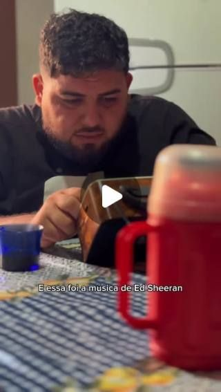<span class="play"><svg><use href="#i-play"/></svg></span><span class="cap"><b>Orgulho Nacional</b><span>Assistir</span></span></a>
        </div>
        <div class="info">
          <span class="chip">Campanha · Educação</span>
          <h3>Um aluno da cidade premiado em nível nacional</h3>
          <p>A conquista de um estudante virou orgulho coletivo. Em vez de uma nota oficial, a cidade inteira celebrou um dos seus, e a escola pública ganhou a vitrine que merece.</p>
          <dl><dt>Objetivo</dt><dd>Valorizar a educação pública</dd><dt>Tom</dt><dd>Emoção e pertencimento</dd><dt>Cliente</dt><dd>Prefeitura de Varjota</dd></dl>
        </div>
      </article>
      <article class="case">
        <div class="thumbs">
          <a class="reel" href="https://www.instagram.com/reel/DQo5UAdEbeX" target="_blank" rel="noopener"><span class="play"><svg><use href="#i-play"/></svg></span><span class="cap"><b>Capacete é lei</b><span>Assistir</span></span></a>
          <a class="reel" href="https://www.instagram.com/reel/DQjvppLkcNM" target="_blank" rel="noopener"><span class="play"><svg><use href="#i-play"/></svg></span><span class="cap"><b>IPVA</b><span>Assistir</span></span></a>
        </div>
        <div class="info">
          <span class="chip" style="color:var(--c-mag)">Campanha · Trânsito</span>
          <h3>Trânsito, multas e IPVA explicados com humor</h3>
          <p>Multa costuma gerar rejeição. Usamos humor, personagens e situações do dia a dia da cidade para passar a mensagem sem sermão, do uso do capacete à isenção de multas e juros do IPVA. Quem ri assiste até o fim, entende a regra e compartilha com os amigos.</p>
          <dl><dt>Objetivo</dt><dd>Educação no trânsito e menos infrações</dd><dt>Tom</dt><dd>Comédia com informação</dd><dt>Formato</dt><dd>Série de reels</dd></dl>
        </div>
      </article>
    </div>

    <div class="gallery">
      <a class="reel" href="https://www.instagram.com/reel/DX_xaKGRog7" target="_blank" rel="noopener"><span class="play"><svg><use href="#i-play"/></svg></span><span class="cap"><b>Água que Transforma</b><span>Infraestrutura</span></span></a>
      <a class="reel" href="https://www.instagram.com/reel/DVT15p8kfYi" target="_blank" rel="noopener"><span class="play"><svg><use href="#i-play"/></svg></span><span class="cap"><b>Nova Escola, Nova Cara</b><span>Valorizar</span></span></a>
      <a class="reel" href="https://www.instagram.com/reel/DQMjRAjjdQj" target="_blank" rel="noopener"><span class="play"><svg><use href="#i-play"/></svg></span><span class="cap"><b>Orgulho Nacional</b><span>Aluno premiado</span></span></a>
      <a class="reel" href="https://www.instagram.com/reel/DaVHSybSPCX" target="_blank" rel="noopener"><span class="play"><svg><use href="#i-play"/></svg></span><span class="cap"><b>O Mês dos Reencontros</b><span>Cultura · Julho</span></span></a>
      <a class="reel" href="https://www.instagram.com/reel/DadjaXsSOHp" target="_blank" rel="noopener">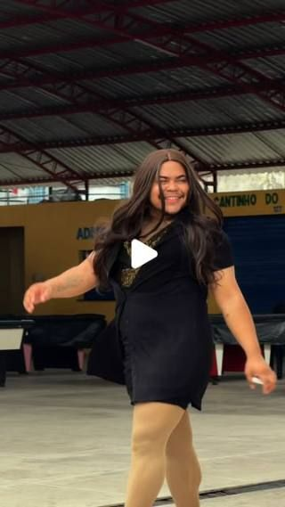<span class="play"><svg><use href="#i-play"/></svg></span><span class="cap"><b>Só em Julho</b><span>Cultura · Julho</span></span></a>
      <a class="reel" href="https://www.instagram.com/reel/DV9bukSjm29" target="_blank" rel="noopener">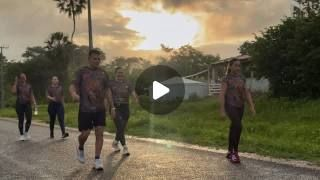<span class="play"><svg><use href="#i-play"/></svg></span><span class="cap"><b>Caminhada da Fé</b><span>Comunidade</span></span></a>
      <a class="reel" href="https://www.instagram.com/reel/DXOxjq3giEo" target="_blank" rel="noopener"><span class="play"><svg><use href="#i-play"/></svg></span><span class="cap"><b>Corrida do Trabalhador</b><span>Mobilizar</span></span></a>
      <a class="reel" href="https://www.instagram.com/reel/DZgPpZ0xCd5" target="_blank" rel="noopener"><span class="play"><svg><use href="#i-play"/></svg></span><span class="cap"><b>Copa dos Campeões</b><span>Mobilizar</span></span></a>
    </div>
    <div class="tags"><span>Educação</span><span>Esporte e juventude</span><span>Trânsito</span><span>Saúde</span><span>Água e obras</span><span>Datas cívicas</span><span>Festas tradicionais</span><span>Eventos religiosos</span><span>Comunicados oficiais</span></div>
    <div class="band">
      <p>Quer ver essa abordagem aplicada à sua cidade?<span>No diagnóstico gratuito, mostramos quais histórias do município já estão prontas para serem contadas.</span></p>
      <a class="btn wa" href="https://wa.me/5588988895040" target="_blank" rel="noopener"><svg><use href="#i-wa"/></svg>Quero o diagnóstico</a>
    </div>
  </div>
</section>

<section id="privado">
  <div class="wrap">
    <div class="head">
      <div class="eyebrow"><b>05</b> · Iniciativa privada</div>
      <h2>Empresas que <em class="s grad">confiam</em> na KROMA.</h2>
      <p class="lead">Com marcas privadas, o resultado é cobrado em cliente e venda. É esse mesmo rigor que levamos para a gestão pública. Atendemos poucos clientes por vez para manter a qualidade.</p>
    </div>
    <div class="mosaic">
      <a class="reel" href="https://www.instagram.com/reel/DTvknsGkR-x" target="_blank" rel="noopener">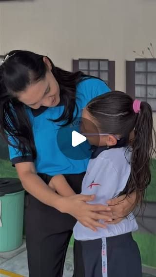<span class="cap"><b>Winner Escola</b><span>Educação</span></span></a>
      <a class="reel" href="https://www.instagram.com/reel/DbEgTDAzxqa" target="_blank" rel="noopener">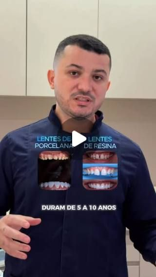<span class="cap"><b>Dr. Júnior Mororó</b><span>Saúde</span></span></a>
      <a class="reel" href="https://www.instagram.com/reel/DYJ4hzPRsUf" target="_blank" rel="noopener">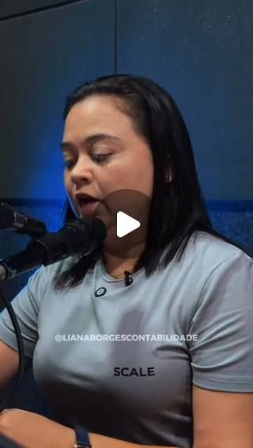<span class="cap"><b>Liana Borges Contab.</b><span>Serviços</span></span></a>
      <a class="reel" href="https://www.instagram.com/reel/DZxV_QgRPAA" target="_blank" rel="noopener">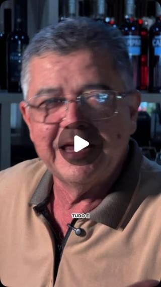<span class="cap"><b>Frango do Zé</b><span>Alimentação</span></span></a>
      <a class="reel" href="https://www.instagram.com/reel/Dai6NndhgWT" target="_blank" rel="noopener">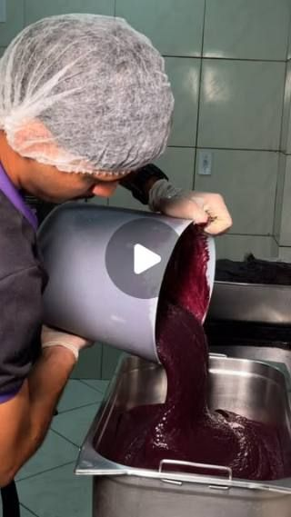<span class="cap"><b>Natural Roots Açaí</b><span>Alimentação</span></span></a>
      <a class="reel" href="https://www.instagram.com/reel/Da8egUEPge5" target="_blank" rel="noopener">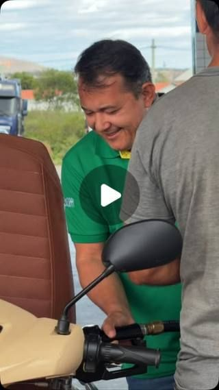<span class="cap"><b>Auto Posto União</b><span>Serviços</span></span></a>
      <a class="reel" href="https://www.instagram.com/reel/DYaT0qhMrE8" target="_blank" rel="noopener">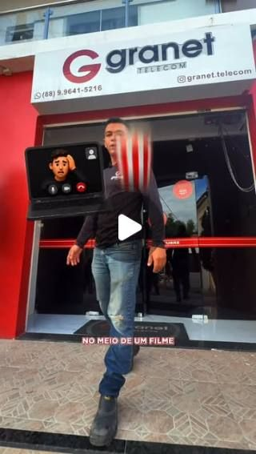<span class="cap"><b>Granet Telecom</b><span>Serviços</span></span></a>
      <a class="reel" href="https://www.instagram.com/reel/DXU-OR4j6uP" target="_blank" rel="noopener">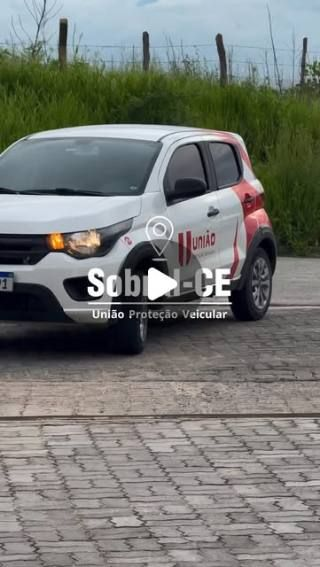<span class="cap"><b>Paulo Jefferson</b><span>Automotivo</span></span></a>
      <a class="reel" href="https://www.instagram.com/reel/DWTr2H_DpcH" target="_blank" rel="noopener">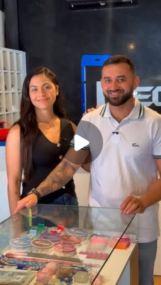<span class="cap"><b>Régis Cell</b><span>Varejo</span></span></a>
      <a class="reel" href="https://www.instagram.com/reel/DVBXf1uAvoM" target="_blank" rel="noopener">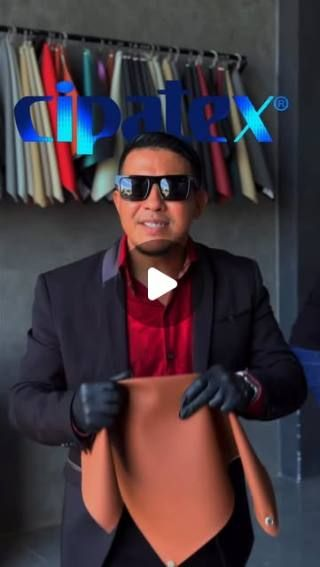<span class="cap"><b>Estoff Couros</b><span>Varejo</span></span></a>
      <a class="reel" href="https://www.instagram.com/reel/DVqr5-Djk-6" target="_blank" rel="noopener">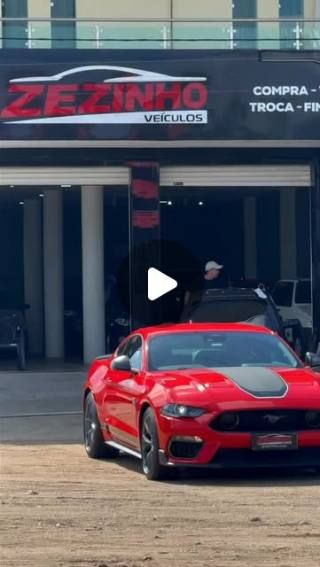<span class="cap"><b>Diego Magnata</b><span>Automotivo</span></span></a>
      <a class="reel" href="https://kroma.mov" target="_blank" rel="noopener" style="display:grid;place-items:center;text-align:center;padding:16px;background:var(--bg-2)"><span style="display:grid;gap:6px"><b style="font-family:var(--font-d);font-size:28px" class="grad">57</b><span style="font-size:13px;color:var(--fg-dim)">reels no portfólio completo</span><span style="font-family:var(--font-m);font-size:11px;color:var(--muted)">kroma.mov ↗</span></span></a>
    </div>
  </div>
</section>

<section id="metodo">
  <div class="wrap">
    <div class="head">
      <div class="eyebrow"><b>06</b> · Método</div>
      <h2>Como funciona <em class="s">com a prefeitura</em>.</h2>
      <p class="lead">Um processo claro, para a assessoria de comunicação saber em que etapa está cada vídeo.</p>
    </div>
    <ol class="steps">
      <li><span class="ico"><svg viewBox="0 0 24 24"><circle cx="11" cy="11" r="7"/><path d="m20 20-3.5-3.5"/></svg></span><small>ETAPA 1</small><h3>Diagnóstico</h3><p>Reunião com gabinete e secretarias. Levantamos obras, serviços, campanhas e as histórias de gente por trás de cada uma.</p></li>
      <li><span class="ico"><svg viewBox="0 0 24 24"><path d="M4 4h12l4 4v12H4z"/><path d="M8 10h8M8 14h8M8 18h5"/></svg></span><small>ETAPA 2</small><h3>Plano mensal</h3><p>A narrativa do mês: pauta e roteiros aprovados antes de gravar, cada vídeo como um capítulo da história da gestão.</p></li>
      <li><span class="ico"><svg viewBox="0 0 24 24"><rect x="2" y="6" width="14" height="12" rx="2"/><path d="m16 10 6-3v10l-6-3"/></svg></span><small>ETAPA 3</small><h3>Captação</h3><p>Equipe e equipamento na rua, nas escolas, nas unidades de saúde, nos distritos e nos eventos.</p></li>
      <li><span class="ico"><svg viewBox="0 0 24 24"><path d="M4 7h16M4 12h10M4 17h7"/><circle cx="18" cy="16" r="3"/></svg></span><small>ETAPA 4</small><h3>Edição</h3><p>Montagem, cor, som, legenda e identidade visual da prefeitura aplicada em todas as peças.</p></li>
      <li><span class="ico"><svg viewBox="0 0 24 24"><path d="M4 20V10M10 20V4M16 20v-7M22 20H2"/></svg></span><small>ETAPA 5</small><h3>Relatório</h3><p>Vídeos prontos para publicar e relatório mensal de desempenho por secretaria.</p></li>
    </ol>

    <div class="head" style="margin:clamp(56px,7vw,88px) 0 0">
      <h3 style="font-size:clamp(24px,3vw,32px)">Pautas por secretaria</h3>
      <p class="lead">Exemplos de temas que compõem o plano mensal. Cada secretaria pode ter o próprio pacote, e o escopo final é definido junto com a gestão.</p>
    </div>
    <div class="tablewrap">
      <table>
        <thead><tr><th>Secretaria</th><th>Pautas típicas</th><th>Formato</th></tr></thead>
        <tbody>
          <tr><td>Saúde</td><td>Campanhas de vacinação, inauguração e reforma de UBS, orientação sobre atendimento</td><td>Reels informativos, cobertura</td></tr>
          <tr><td>Educação</td><td>Matrícula, volta às aulas, reforma de escolas, projetos pedagógicos</td><td>Reels, vídeo institucional</td></tr>
          <tr><td>Infraestrutura</td><td>Obras de água, estradas, calçamento, antes e depois</td><td>Reels de prestação de contas</td></tr>
          <tr><td>Cultura e turismo</td><td>Festas tradicionais, eventos de julho, festejos religiosos, agenda cultural</td><td>Chamadas, cobertura de eventos</td></tr>
          <tr><td>Trânsito</td><td>Educação no trânsito, multas e regras explicadas com humor, campanhas de segurança</td><td>Série de reels de campanha</td></tr>
          <tr><td>Assistência social</td><td>Programas sociais, cadastros, ações nos bairros e distritos</td><td>Reels de orientação</td></tr>
          <tr><td>Comunicação</td><td>Comunicados oficiais, datas cívicas, balanço da gestão</td><td>Vídeo institucional, reels</td></tr>
        </tbody>
      </table>
    </div>
  </div>
</section>

<section id="entregas">
  <div class="wrap">
    <div class="head">
      <div class="eyebrow"><b>07</b> · O que a prefeitura recebe</div>
      <h2>Uma assessoria <em class="s grad">completa</em>, de ponta a ponta.</h2>
      <p class="lead">Da ideia ao vídeo publicado, sem terceirizar o essencial. A quantidade de peças por mês é dimensionada na proposta comercial, conforme a demanda do município.</p>
    </div>
    <div class="deliver">
      <div class="dv"><svg viewBox="0 0 24 24"><rect x="4" y="4" width="16" height="17" rx="2"/><path d="M8 2v4M16 2v4M4 10h16"/></svg><h3>Plano editorial mensal</h3><p>Calendário de pautas alinhado às secretarias e às datas da cidade.</p></div>
      <div class="dv"><svg viewBox="0 0 24 24"><path d="M4 4h12l4 4v12H4z"/><path d="M8 10h8M8 14h8"/></svg><h3>Roteiros aprovados</h3><p>Cada vídeo com objetivo, mensagem e personagens definidos antes de gravar.</p></div>
      <div class="dv"><svg viewBox="0 0 24 24"><rect x="6" y="2" width="12" height="20" rx="2"/><path d="M11 18h2"/></svg><h3>Reels para as redes</h3><p>Vídeos verticais, legendados e com a identidade visual da prefeitura.</p></div>
      <div class="dv"><svg viewBox="0 0 24 24"><rect x="2" y="5" width="20" height="14" rx="2"/><path d="m10 9 5 3-5 3z"/></svg><h3>Vídeo institucional</h3><p>Filmes para apresentar programas, balanços e grandes entregas da gestão.</p></div>
      <div class="dv"><svg viewBox="0 0 24 24"><path d="M12 2l2.4 6.9H22l-6 4.6 2.3 7.1L12 16.3 5.7 20.6 8 13.5 2 8.9h7.6z"/></svg><h3>Cobertura de eventos</h3><p>Chamada antes, cobertura no dia e retrospectiva para virar memória.</p></div>
      <div class="dv"><svg viewBox="0 0 24 24"><circle cx="12" cy="8" r="4"/><path d="M4 21c0-4 3.6-7 8-7s8 3 8 7"/></svg><h3>Histórias da população</h3><p>Personagens reais da cidade, escolhidos e entrevistados pela equipe.</p></div>
      <div class="dv"><svg viewBox="0 0 24 24"><path d="M4 20V10M10 20V4M16 20v-7M22 20H2"/></svg><h3>Relatório mensal</h3><p>Alcance, retenção e resposta do público, por secretaria e por vídeo.</p></div>
      <div class="dv"><svg viewBox="0 0 24 24"><path d="M21 12a8 8 0 0 1-11.6 7.1L4 20l1-4.6A8 8 0 1 1 21 12Z"/></svg><h3>Alinhamento contínuo</h3><p>Reunião mensal com a comunicação e canal direto para demandas urgentes.</p></div>
    </div>
  </div>
</section>

<section id="agora">
  <div class="wrap">
    <div class="head">
      <div class="eyebrow"><b>08</b> · Por que começar agora</div>
      <h2>O começo do ano <em class="s grad">já tem pauta</em>.</h2>
      <p class="lead">Os primeiros meses de 2027 concentram assuntos que a população precisa saber. Quem planeja agora chega em janeiro com narrativa, roteiros e equipe prontos, em vez de correr atrás da agenda.</p>
    </div>
    <div class="cal">
      <div><span class="m">Janeiro</span><ul><li>Matrículas na rede municipal</li><li>IPVA e regularização de veículos</li><li>Programação de férias</li></ul></div>
      <div><span class="m">Fevereiro</span><ul><li>Volta às aulas</li><li>Carnaval e segurança no trânsito</li><li>Escolas e obras entregues no recesso</li></ul></div>
      <div><span class="m">Março</span><ul><li>Balanço do primeiro trimestre</li><li>Campanhas de saúde</li><li>Agenda esportiva e cultural do ano</li></ul></div>
    </div>
    <div class="scarce">
      <svg viewBox="0 0 24 24"><circle cx="12" cy="12" r="9"/><path d="M12 7v5l3 2"/></svg>
      <p><b>A KROMA atende um número limitado de clientes por vez.</b> Cada cliente recebe estratégia e produção exclusivas, por isso a agenda é fechada com antecedência.</p>
    </div>
  </div>
</section>

<section id="indicadores">
  <div class="wrap">
    <div class="head">
      <div class="eyebrow"><b>09</b> · Indicadores</div>
      <h2>O que vamos <em class="s grad">medir</em>.</h2>
      <p class="lead">Cada peça é avaliada pelo objetivo para o qual foi feita. Um vídeo que informa é medido pela clareza e pelas dúvidas que resolve; um que mobiliza, pela adesão; um que educa, por quanto as pessoas assistem. Alcance é consequência, não o único critério. As metas são pactuadas com a gestão no diagnóstico.</p>
    </div>
    <div class="kpis">
      <div class="kpi"><svg viewBox="0 0 24 24"><path d="M2 12s3.6-7 10-7 10 7 10 7-3.6 7-10 7S2 12 2 12Z"/><circle cx="12" cy="12" r="3"/></svg><h3>Alcance e visualizações</h3><span class="f">mensal</span><p>Quantas pessoas viram o conteúdo da prefeitura, por vídeo e por secretaria.</p></div>
      <div class="kpi"><svg viewBox="0 0 24 24"><circle cx="12" cy="12" r="9"/><path d="M12 7v5l3 2"/></svg><h3>Retenção</h3><span class="f">por vídeo</span><p>Quanto do vídeo as pessoas assistem. Mostra se a mensagem chegou inteira.</p></div>
      <div class="kpi"><svg viewBox="0 0 24 24"><circle cx="8" cy="8" r="3"/><circle cx="16" cy="8" r="3"/><path d="M2 20c0-3.3 2.7-6 6-6 1.5 0 2.9.6 4 1.5A6 6 0 0 1 22 20"/></svg><h3>Conexão com a população</h3><span class="f">mensal</span><p>Comentários, compartilhamentos, marcações e mensagens. Mede se as pessoas se reconheceram na história.</p></div>
      <div class="kpi"><svg viewBox="0 0 24 24"><path d="M20 6 9 17l-5-5"/></svg><h3>Adesão a campanhas</h3><span class="f">por campanha</span><p>Comparação com dados da secretaria: doses aplicadas, matrículas, público em eventos.</p></div>
    </div>
    <p class="note">Linha de base: no primeiro mês, levantamos os números atuais dos perfis oficiais da prefeitura para que a evolução seja comparada com dados reais.</p>
  </div>
</section>

<section id="duvidas">
  <div class="wrap">
    <div class="head">
      <div class="eyebrow"><b>10</b> · Perguntas frequentes</div>
      <h2>Antes de <em class="s grad">decidir</em>.</h2>
    </div>
    <div class="faq">
      <details open><summary>A prefeitura já tem equipe de comunicação. Por que contratar a KROMA?</summary><p>A KROMA trabalha junto com a equipe, não no lugar dela. A comunicação da prefeitura continua cuidando das notas, da imprensa e das redes, e o registro fotográfico dos eventos segue com quem já faz. A KROMA entra com o que falta: estratégia de narrativa, roteiro, captação e edição de vídeos pensados para cada objetivo.</p></details>
      <details><summary>Como a prefeitura contrata a KROMA?</summary><p>Cada secretaria ou fundo municipal pode contratar o próprio pacote, com objeto, escopo e valor definidos, no mesmo formato que a prefeitura já usa para serviços de comunicação, fotografia e filmagem. A KROMA entrega a proposta e a documentação necessária para o processo.</p></details>
      <details><summary>Quem aprova o que vai ao ar?</summary><p>A gestão. Pautas e roteiros são aprovados antes da gravação, e nenhum vídeo é publicado sem o aval da comunicação da prefeitura.</p></details>
      <details><summary>O conteúdo segue as regras da publicidade oficial?</summary><p>Sim. Todo conteúdo institucional tem caráter educativo, informativo ou de orientação social, com o cidadão e o serviço no centro e sem promoção pessoal, como determina o art. 37, § 1º, da Constituição.</p></details>
      <details><summary>Vocês gravam nos distritos e na zona rural?</summary><p>Sim. Já produzimos chamadas para eventos nos distritos, como a Copa dos Campeões em Croatá dos Martins, em Varjota. Contar a história de quem está longe do centro é parte do método.</p></details>
      <details><summary>E se um vídeo não viralizar?</summary><p>Viralizar não é o objetivo de todo vídeo. Cada peça tem um propósito definido no roteiro (informar, educar, mobilizar ou valorizar) e é avaliada por ele no relatório mensal.</p></details>
      <details><summary>Como começa o trabalho?</summary><p>Pelo diagnóstico gratuito. Analisamos a comunicação atual e apresentamos um plano para os primeiros 90 dias. O escopo e a quantidade de peças são definidos na proposta, conforme a necessidade do município.</p></details>
    </div>
  </div>
</section>

<section id="contato" class="cta">
  <div class="wrap">
    <div class="eyebrow"><b>11</b> · Próximo passo</div>
    <h2>Vamos montar o <span class="grad">diagnóstico</span> da prefeitura.</h2>
    <p class="lead">O diagnóstico é gratuito e sem compromisso. Mesmo que a prefeitura não feche com a KROMA, o plano apresentado fica com a gestão.</p>
    <ol class="next">
      <li><div><b>Conversa inicial</b>Pelo WhatsApp ou presencialmente, para entender as prioridades da gestão.</div></li>
      <li><div><b>Diagnóstico</b>Analisamos os perfis oficiais e a comunicação atual do município.</div></li>
      <li><div><b>Plano de 90 dias</b>Apresentamos a narrativa, as pautas por secretaria e as primeiras histórias a contar.</div></li>
    </ol>
    <div class="contacts">
      <div class="contact main"><small>WhatsApp · atendimento direto</small><span class="v num" id="c-whats">(88) 98889-5040</span><div class="row"><a class="btn wa" href="https://wa.me/5588988895040" target="_blank" rel="noopener"><svg><use href="#i-wa"/></svg>Abrir conversa</a><button class="copy" type="button" data-copy="c-whats">Copiar número</button></div></div>
      <div class="contact"><small>E-mail</small><span class="v" id="c-mail">kromamov@gmail.com</span><div class="row"><button class="copy" type="button" data-copy="c-mail">Copiar e-mail</button></div></div>
      <div class="contact"><small>Instagram · Site</small><span class="v"><a href="https://www.instagram.com/kroma_mov" target="_blank" rel="noopener">@kroma_mov</a></span><div class="row"><a class="copy" href="https://kroma.mov" target="_blank" rel="noopener">kroma.mov ↗</a></div></div>
    </div>
  </div>
</section>

</main>

<footer>
  <div class="wrap">
    <span>KROMA · Assessoria audiovisual · Fortaleza, CE</span>
    <span>Dados do portfólio: kroma.mov, consultado em 18/11/2026</span>
  </div>
</footer>

<script>
document.querySelectorAll('button.copy').forEach(function(btn){
  var label = btn.textContent;
  btn.addEventListener('click', function(){
    var el = document.getElementById(btn.getAttribute('data-copy'));
    var text = el.textContent.trim();
    var fallback = function(){
      var r = document.createRange(); r.selectNodeContents(el);
      var s = window.getSelection(); s.removeAllRanges(); s.addRange(r);
      btn.textContent = 'Selecionado';
    };
    try {
      navigator.clipboard.writeText(text).then(function(){
        btn.textContent = 'Copiado';
        setTimeout(function(){ btn.textContent = label; }, 1600);
      }, fallback);
    } catch (e) { fallback(); }
  });
});
</script>
